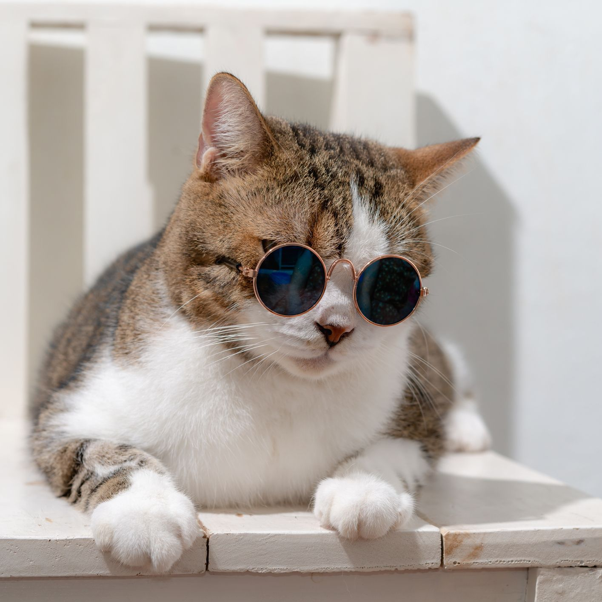

Dog
The dog or domestic dog (Canis familiaris or Canis lupus familiaris) is a domesticated descendant of the
wolf, and is characterized by an upturning tail. The dog is derived from an ancient, extinct wolf, and the
modern wolf is the dog's nearest living relative. The dog was the first species to be domesticated, by
hunter-gatherers over 15,000 years ago, before the development of agriculture. Due to their long association
with humans, dogs have expanded to a large number of domestic individuals and gained the ability to thrive
on a starch-rich diet that would be inadequate for other canids.
The dog has been selectively bred over millennia for various behaviors, sensory capabilities, and physical
attributes. Dog breeds vary widely in shape, size, and color. They perform many roles for humans, such as
hunting, herding, pulling loads, protection, assisting police and the military, companionship, therapy, and
aiding disabled people. Over the millennia, dogs became uniquely adapted to human behavior, and the
human-canine bond has been a topic of frequent study. This influence on human society has given them the
sobriquet of "man's best friend".

Cat
The cat (Felis catus) is a domestic species of small carnivorous mammal. It is the only domesticated species
in the family Felidae and is often referred to as the domestic cat to distinguish it from the wild members
of the family. A cat can either be a house cat, a farm cat or a feral cat; the latter ranges freely and
avoids human contact. Domestic cats are valued by humans for companionship and their ability to kill
rodents. About 60 cat breeds are recognized by various cat registries.
The cat is similar in anatomy to the other felid species: it has a strong flexible body, quick reflexes,
sharp teeth and retractable claws adapted to killing small prey. Its night vision and sense of smell are
well developed. Cat communication includes vocalizations like meowing, purring, trilling, hissing, growling
and grunting as well as cat-specific body language. A predator that is most active at dawn and dusk
(crepuscular), the cat is a solitary hunter but a social species. It can hear sounds too faint or too high
in frequency for human ears, such as those made by mice and other small mammals. Cats also secrete and
perceive pheromones.
Female domestic cats can have kittens from spring to late autumn, with litter sizes often ranging from two
to five kittens. Domestic cats are bred and shown at events as registered pedigreed cats, a hobby known as
cat fancy. Population control of cats may be effected by spaying and neutering, but their proliferation and
the abandonment of pets has resulted in large numbers of feral cats worldwide, contributing to the
extinction of entire bird, mammal, and reptile species.
It was long thought that cat domestication began in ancient Egypt, where cats were venerated from around
3100 BC, but recent advances in archaeology and genetics have shown that their domestication occurred in
Western Asia around 7500 BC.
As of 2021, there were an estimated 220 million owned and 480 million stray cats in the world. As of 2017,
the domestic cat was the second most popular pet in the United States, with 95.6 million cats owned and
around 42 million households own at least one cat. In the United Kingdom, 26% of adults have a cat with an
estimated population of 10.9 million pet cats as of 2020.
